Dockerized DevOps Environment
A containerized application and infrastructure environment that develops from standalone services into a connected multi-container stack, with each concept verified through hands-on deployment, networking and troubleshooting.
Build containers as connected parts of a system.
The project progresses from independently containerized services toward a multi-container environment managed with Docker Compose. Its focus is not only on individual Docker commands, but on how isolated services can be packaged, connected, inspected, tested and managed as one environment.
Run a portfolio website inside a standalone Nginx container
The project first starts with a simple, independent static web deployment. A single portfolio index.html file is served through one Nginx container.
This step is intentionally simple: the goal is to understand the basic container workflow before introducing shared content, multiple container instances or Compose. The website file is provided to Nginx, the container is started, a host port is published and the page is then verified in the browser.
At this stage there is only one website file and one web container. Shared content between multiple containers is introduced in the next step.
- Prepared a standalone portfolio index.html.
- Ran Nginx as a single containerized web server.
- Published the container through a host port.
- Opened the portfolio in the browser to verify delivery.
View standalone static web deployment
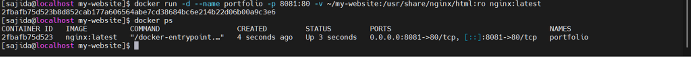
Serve one shared website through multiple Nginx containers
After the standalone deployment, the project moves to multiple web-server instances. Two independent Nginx containers serve the same website source from ./site.
The same host directory is mounted into both containers, allowing them to share one source of content while keeping their container lifecycles independent.
volumes: - ./site:/usr/share/nginx/html:ro
The :ro mount keeps the website read-only from the container side. Nginx can read and serve the files, but it cannot modify the host content.
The implementation was verified in two steps: both containers were queried independently with curl, and then the shared website file was edited to confirm that the updated content became visible through both endpoints without rebuilding the containers.
- Started two independent Nginx containers.
- Mounted the same ./site directory into both containers.
- Verified both containers independently with curl.
- Edited the shared website file.
- Refreshed both endpoints and confirmed the same updated content.
View shared-content implementation
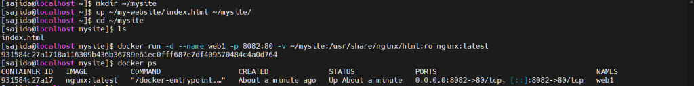
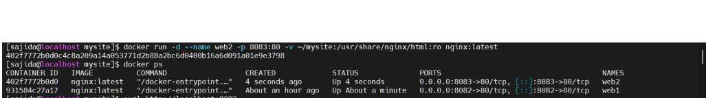
View curl verification on both containers
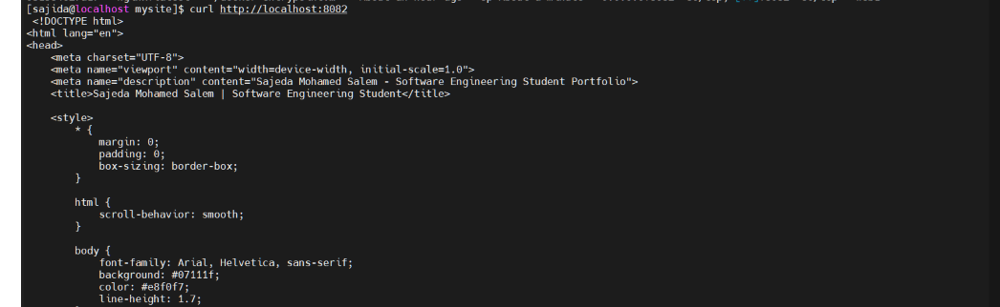
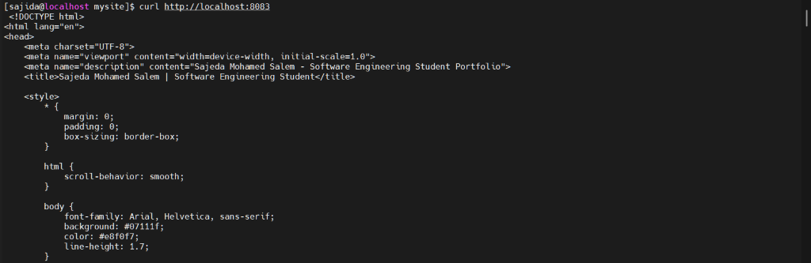
View shared-content update test
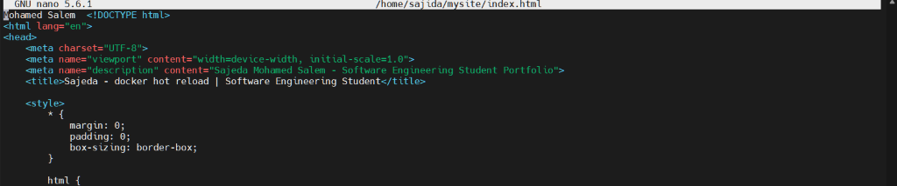
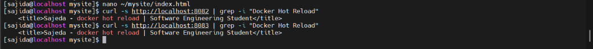
A REST-based Server Inventory API
The backend models a small inventory of infrastructure servers and supports retrieving, creating and deleting records. FastAPI also provides interactive documentation at /docs, allowing the API to be explored without a separate frontend client.
| Method | Endpoint | Purpose |
|---|---|---|
| GET | /health | Application health |
| GET | /servers | Retrieve all servers |
| GET | /servers/{server_id} | Retrieve one server |
| POST | /servers | Create a server |
| DELETE | /servers/{server_id} | Delete a server |
The application supports environment-based runtime configuration through HOST, PORT and APP_ENV, keeping runtime configuration separate from application logic.
- Opened the interactive FastAPI documentation.
- Verified the application through the health endpoint.
View FastAPI practical verification
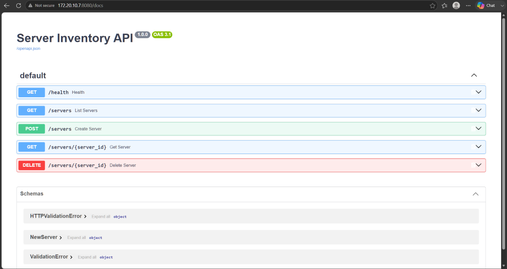
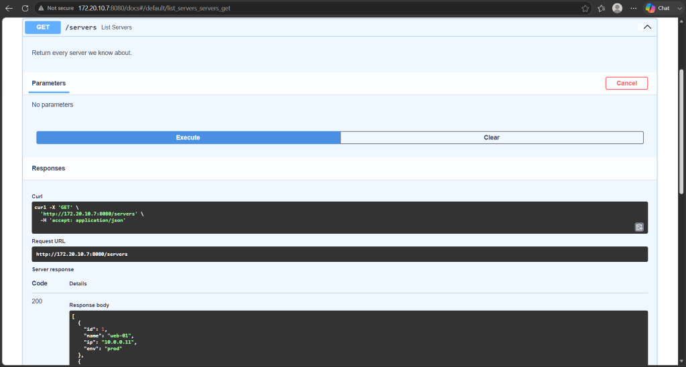
Keep runtime configuration outside the application logic
The API can read HOST, PORT and APP_ENV from the runtime environment. Defaults keep local execution simple, while environment variables allow the same application code to behave differently when deployed elsewhere.
For example, GET /health returns the current application status together with the active environment. This makes configuration visible without hard-coding environment-specific values into the application.
View application configuration
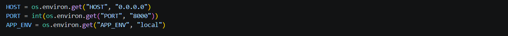
Keep persistence intentionally lightweight
The current API stores server records in an in-memory Python dictionary. Each record contains id, name, ip and env.
This is intentionally simple so the focus stays on API behaviour, containerization and service architecture. Because the data is in memory, it does not persist when the application process or container is recreated.
- Created and queried server records through the API.
- Worked with the lightweight in-memory server inventory.
- Kept Redis clearly separated from the current application data layer.
View API data-model evidence
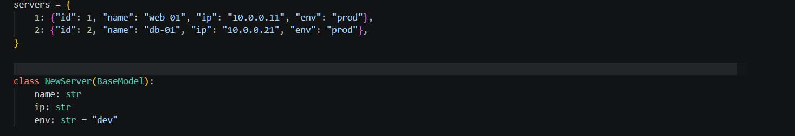
Package the FastAPI runtime independently of the host
Once the application behaviour and data model are established, the FastAPI service is packaged into its own image. The Dockerfile uses python:3.12-slim, creates /app as the working directory, installs dependencies from requirements.txt, copies the application and exposes port 8000.
FROM python:3.12-slim WORKDIR /app COPY requirements.txt . RUN pip install --no-cache-dir -r requirements.txt COPY app.py . EXPOSE 8000 CMD ["python", "app.py"]
This makes the application's Python runtime and dependencies part of the container image rather than prerequisites on the host machine.
- Wrote the FastAPI image definition in a Dockerfile.
- Built the image.
- Ran the containerized application.
- Verified the container logs.
View FastAPI containerization workflow
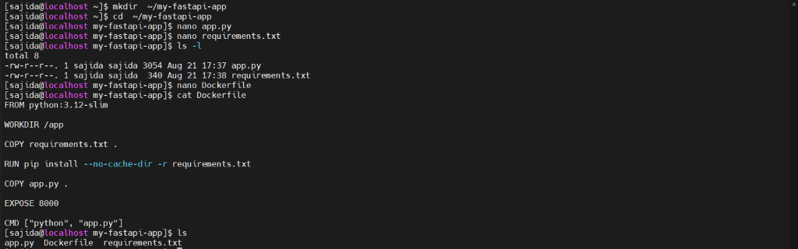
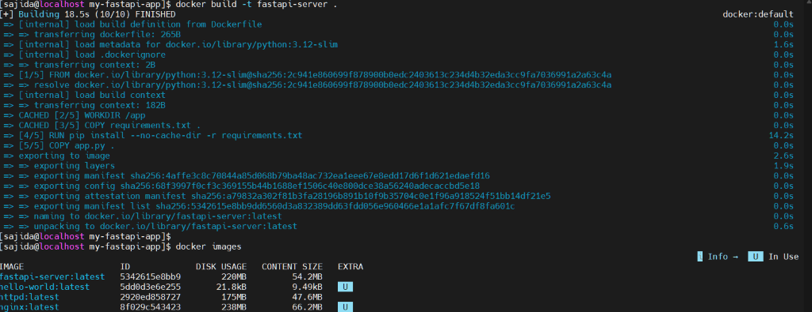
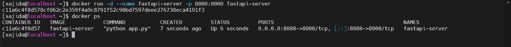
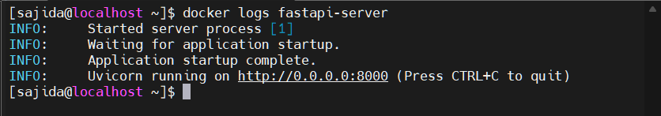
Manage the complete stack as one environment
Docker Compose defines the multi-container environment declaratively in one Compose file. Instead of recreating container settings manually, the file captures the services, build/image configuration, ports, volumes and runtime relationships required by the stack.
The complete environment was started in detached mode and verified from several angles. docker compose ps confirmed service state, HTTP requests verified the exposed services, and Redis was checked through a successful PONG response. Finally, the environment was stopped and removed as one unit.
- Created the Compose file.
- Started the full stack in detached mode.
- Verified the working Compose environment through service state, HTTP checks and Redis PONG.
- Stopped and removed the stack as one unit.
View Docker Compose implementation
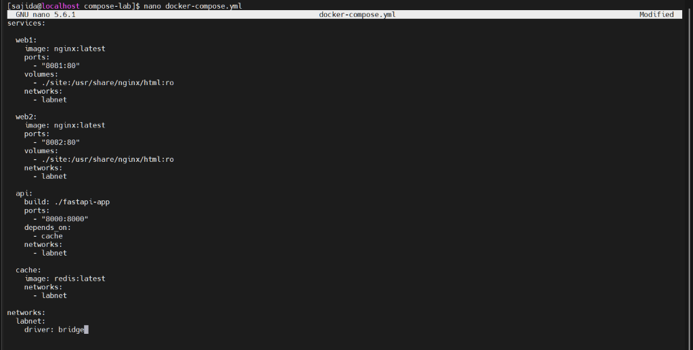
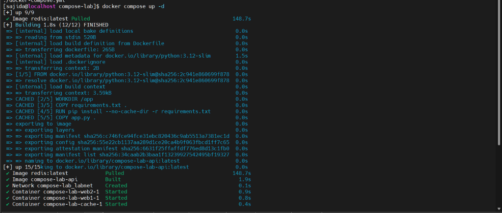
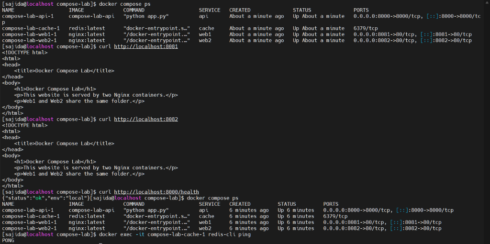
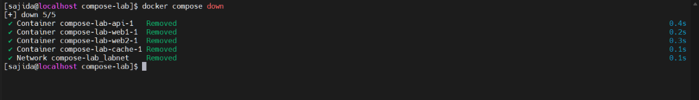
Test connectivity and name resolution on mynet
This networking exercise is separate from the Compose stack. A custom user-defined bridge network named mynet was created, and two standalone containers — nodeA and nodeB — were attached to it.
Because both containers share the same user-defined network, they can communicate directly. Docker's embedded DNS also allows one container to resolve the other by container name instead of relying on a hard-coded IP address.
The network was inspected to confirm membership, and name resolution was tested directly between the two nodes.
- Created mynet.
- Started nodeA and nodeB on the same network.
- Inspected mynet and confirmed both containers were attached.
- Verified Docker DNS name resolution between the nodes.
View mynet connectivity & DNS verification
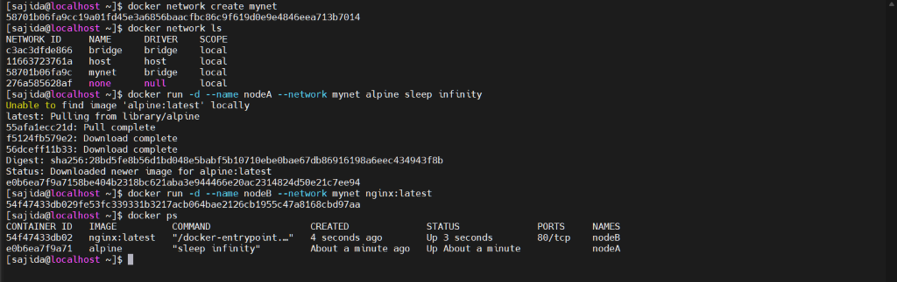
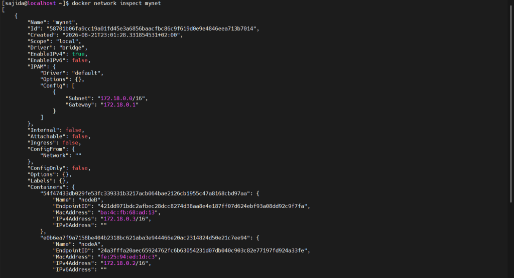
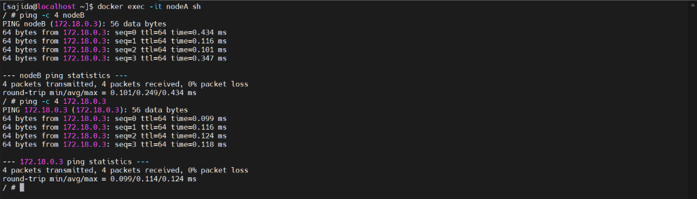
Prove that DNS and connectivity stop at the network boundary
A second custom network, isolated-net, places another container outside mynet. This tests the opposite of the previous exercise: containers that do not share a Docker network should not automatically communicate or resolve one another through Docker DNS.
The failed cross-network communication and name-resolution attempt is therefore evidence of isolation. Docker networking provides not only connectivity, but also explicit communication boundaries.
- Created a separate isolated Docker network.
- Placed the test container outside mynet.
- Attempted cross-network communication and DNS resolution.
- Confirmed that DNS / connectivity did not work across the isolated network boundary.
View isolated-network test
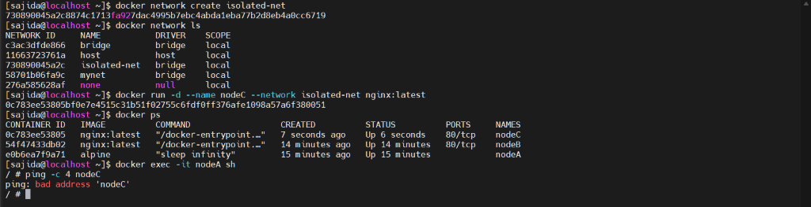
Check application behaviour, service state and runtime output
The project was verified at multiple layers rather than treating a running container as proof that the whole environment worked. An HTTP health request checked application behaviour, docker compose ps showed the state of the Compose services, and container logs provided runtime visibility for the FastAPI service.
These checks answer three useful troubleshooting questions: Is the application responding?, Are the expected containers running?, and What does the application report during startup and execution?
View verification & troubleshooting
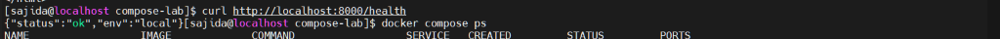
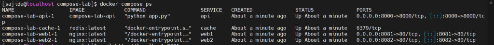
Docker is more useful as an architecture than as a single command.
The project connected image creation, runtime isolation, read-only bind mounts, multiple service instances, API containerization, Compose orchestration, DNS-based discovery, network isolation and troubleshooting. The progression from standalone containers toward an integrated environment made the relationships between these concepts much clearer.